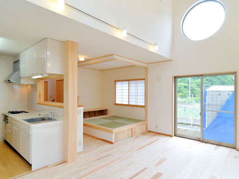
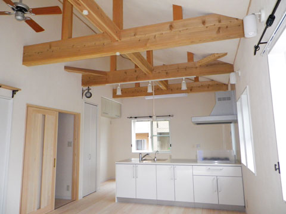

- ホーム
- 自然素材でつくる「本物の健康住宅」｜本物の健康住宅とは？
Whatそもそも「健康住宅」ってどんなもの？
家族の健康と環境を
守る「健康住宅」

豊中市で注文住宅をつくるココロホームでは、環境にやさしくご家族の健康を守る「健康住宅」手掛けています。そもそも健康住宅とは、人の健康に対して害やリスクとなる要因をできる限り排除した住宅を指します。
【住まいにかかわる害やリスク】
- 化学物質による汚染や健康被害
- 室温の低下による健康被害
- 室温の上昇による熱中症など
- 住宅内部の温度差による血圧変動
- 結露によるカビやダニの発生とアレルギーなど
- 建材の塗料や接着剤、材質などによるストレス
- 建物内部の構造による負傷など
こうした健康被害を防ぐためには、断熱性や気密性のほか、耐震性や防音性などさまざまな機能が必要です。
通常の住宅と健康住宅の比較
※表は左右にスクロールして確認することができます。
| 一般的な住宅 | 健康住宅 | |
|---|---|---|
| 構造材 | 外国産の安価な木材 | 国産の無垢材 |
| 接着剤 | 酢酸ビニル系接着剤 | デンプン剤 |
| 床材 | 合板 | 国産の無垢材 |
| 内装 | ビニールクロス | 塗り壁など |
| 給水管 | 塩化ビニール | ステンレスなど |
| コンロ | IHクッキングヒーター | ガスコンロ |
本物の健康住宅とは

現在、「健康住宅」とは24時間換気システムや自然素材の使用といったシックハウス対策ができている住宅を指します。しかし、明確な定義が決められているわけではないため、一部に自然素材が使用されていれば「健康住宅」として販売されています。
ココロホームでは、「本物の健康住宅」にこだわり、目に見えない土台や柱の構造まで国産の無垢材を使用しているほか、ミネラル系の珪藻土や珊瑚の塗り壁を採用しています。安心して長く住んでもらえる住宅づくりのために、自然素材選びを徹底しています。